For the High-Luminosity LHC, the first-level trigger of ATLAS gets a new stage: the Global Trigger. Its idea is simple to state and hard to build. Instead of each subsystem deciding on its own part of the detector, all the trigger data of one bunch crossing are brought to a single processor, which can then reconstruct and analyse the whole event. The piece that makes that possible is the multiplexer. From 2025 to 2026 I was the architect of its firmware, and this post describes the design.
What the multiplexer does
About 50 Tb/s of trigger data from the calorimeters and the muon system arrive at the Global Trigger, 40 million bunch crossings per second. No single processor can receive that every 25 ns. So the processing is time-multiplexed: a set of identical processors, called GEPs, each take whole events in turn. GEP 0 gets bunch crossing 0, GEP 1 gets bunch crossing 1, and so on, and each has many bunch crossings' worth of time to work on its event.
The multiplexers sit in front of them. Each multiplexer FPGA receives data from one subsystem on many input links, every bunch crossing, and has to send all the data of each bunch crossing out on the one output link that leads to the GEP in charge of it. Every input talks to every output, in a fixed rotation. The hardware is the Global Common Module (GCM), a board with AMD Versal Premium devices, and the multiplexer firmware comes in three versions, for links at 9.6, 11.2 and 25 Gb/s.
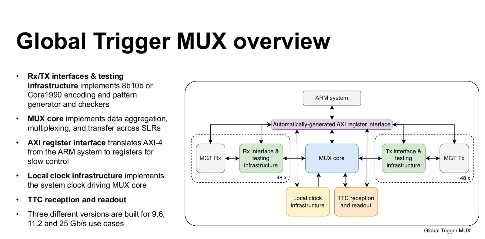
Working principles
Before the architecture, the team agreed on a few principles, and they shaped everything that followed. Push complexity from firmware to software, because firmware is slow to change and software is not. Build testing in to stay: pattern generators, checkers and error injection are part of the production firmware, not a separate test build. Test continuously, with automated procedures that run firmware and software together. Plan the work so that as many tasks as possible can go ahead in parallel, without waiting for each other or for the systems upstream and downstream. Keep the overhead low. And add complexity in small steps, so that each new problem can be isolated.
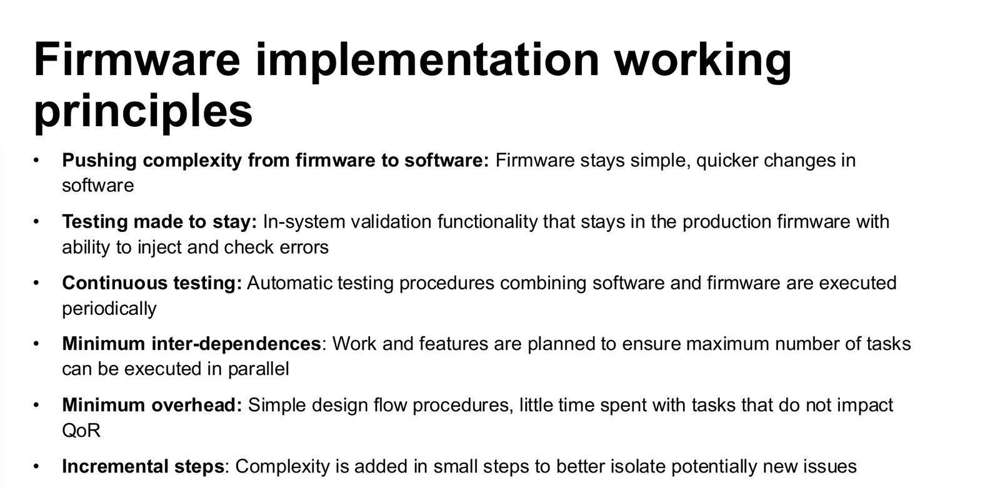
The third principle has a practical consequence. The multiplexer was developed and tested long before the boards that feed it and the GEPs that receive from it were ready, by emulating both. Pattern generators on spare boards stood in for the subsystems, and checkers stood in for the GEPs.
The core
The architecture has three stages. In the input stage, logic specific to each subsystem receives the data, checks it for CRC errors and writes it into an input FIFO, in the clock domain of its link. In the multiplexing stage, one multiplexer per output, all in a single clock domain, reads from the input FIFOs and writes to its output FIFO. In the output stage, each output FIFO feeds the link protocol towards a GEP, which adds a CRC. Inputs can be masked without disturbing the rotation, so a broken link does not stop the others.
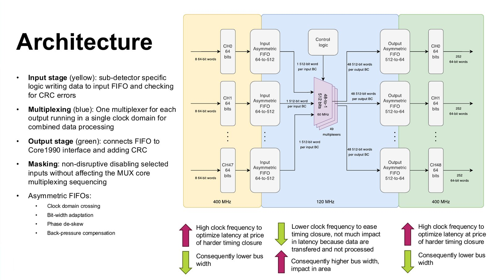
The FIFOs do several jobs at once. They cross clock domains. They change data width, because the links and the core do not use the same word size. They absorb the different arrival phases of the inputs: each input FIFO only starts to be written when its link's control character for the start of the frame arrives, so data of the same bunch crossing line up. And they absorb backpressure from the output links.
The reading order is the subtle part. The figure below shows a reduced example with five inputs and five outputs. Each colour is a GEP. Data from every input for a given bunch crossing must go to the same output, one word at a time, and the reading order has to respect that each output FIFO can only take one word per clock cycle. We keep the input FIFOs almost empty but never empty, like walking along a wall leaning against it, which keeps the latency low.
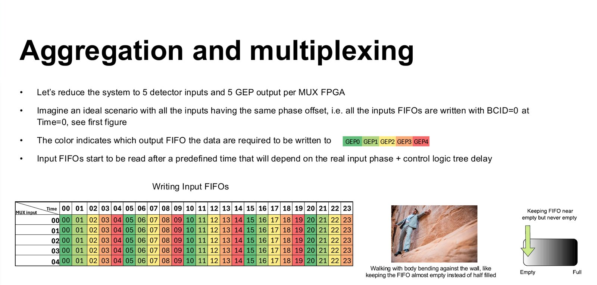
The FIFOs had to be custom for the 10 Gb/s version. The 8b10b links deliver words at a rate that requires a FIFO with a 1-to-7 width ratio, and the vendor FIFOs only support powers of two. A 1-to-8 FIFO does not work either, because the link never leaves a gap to pad the eighth word. The custom FIFO uses seven narrow FIFOs written in turn by a shift register and read together.
The silicon interposer problem
The first implementation failed for a reason that has nothing to do with logic. Large Versal devices are built from several dies, called super logic regions (SLRs), placed side by side on a silicon interposer. Signals that cross from one die to another use a limited number of dedicated wires. With 48 inputs and 48 outputs and 512 bits per bunch crossing on each, a full-mesh multiplexer needs about 24,500 crossings, and the device has about 18,800.
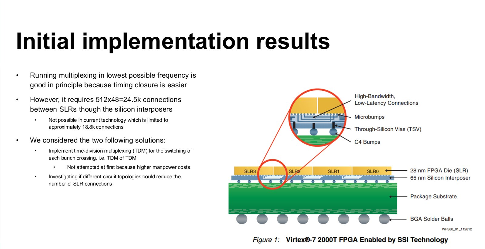
How many crossings are really needed depends on where the multiplexers are placed, and that is not written in the code: the implementation tool replicates and places logic as it sees fit. The slides work through several topologies. Multiplexing inside each die and combining the intermediate results in one place needs twelve crossings in the example. Bringing the inputs of neighbouring dies together first and placing each multiplexer next to its output needs four.
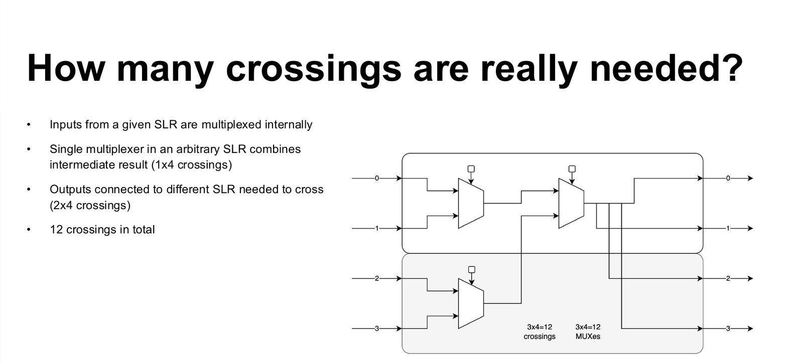
Whatever the topology, the lower bound depends on three things: the number of inputs and outputs, the number of dies, and the width of the data that is switched at once. The first two are fixed by the board. The third is not.
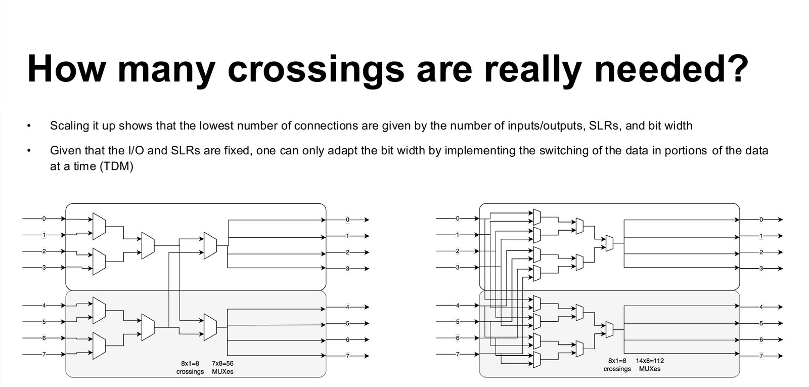
Time-division multiplexing, inside the multiplexer
So we switched the data of each bunch crossing in pieces. With a factor of two, each time slot is divided in two, and the 512 bits of a bunch crossing go through the switch 256 bits at a time. The number of die crossings halves, to about 12,250, well within the limit. The architecture is otherwise unchanged: it is time-division multiplexing applied inside a time-division multiplexer.
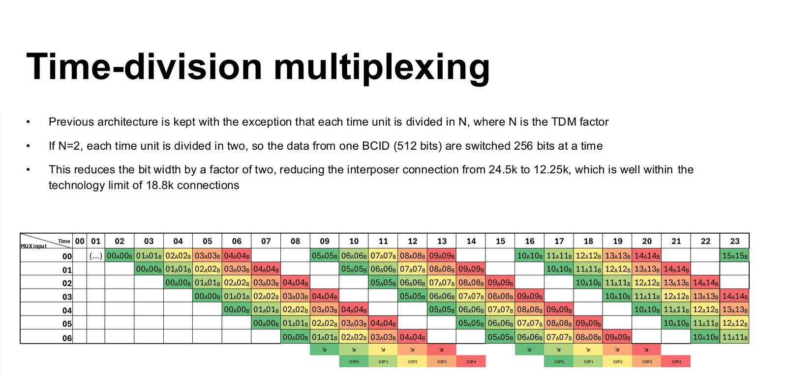
With it, the full mesh of 48 inputs and 48 outputs fits in a VP1802 with four dies, with low logic utilisation and timing closed in the faster speed grade without much optimisation effort. On the next board version, which places most of the high-speed I/O in one die, the design closes timing even without it, and the factor of two still improves timing.
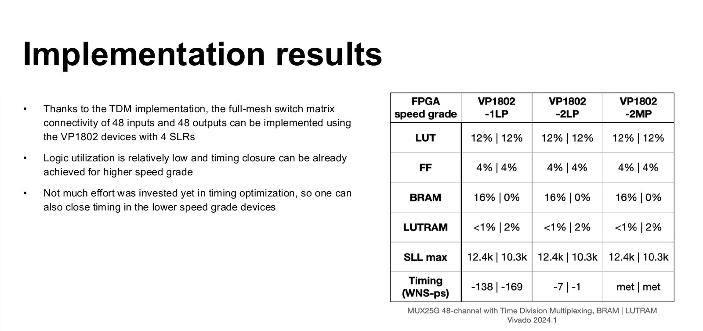
Keeping everyone on the same bunch crossing
Each multiplexer has 49 outputs, so a given output sends bunch crossing 0, then 49, then 98, and so on, wrapping around the 3,564 bunch crossings of an LHC orbit. It takes 523 such rotations, about 640 µs, before the same output sends bunch crossing 0 again. All the multiplexers must start this cycle together, or the GEPs would receive pieces of different events. The plan is to use slow control together with the unique event identifier to start them all at once. Inputs can also fail during a run, so any input can be masked at the multiplexing stage, which runs on a clock that is always present, and an input frame with a CRC error is replaced by zeros or another predefined pattern.
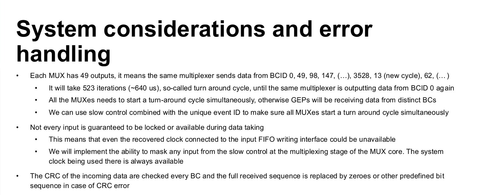
Registers from a wish list
Pushing complexity to software means a lot of information has to travel through a narrow pipe: configuration, masks, filter coefficients, counters, status. Every register needs an address, a width and a mask, and firmware and software have to agree on all of them, forever. Wishlist is a tool I wrote for this. You describe what you want to exchange in a YAML file, and it allocates the addresses, packs wide values into several words, replicates structures, and generates the VHDL package and address decoder, the software register description and documentation from templates. Extra attributes in the YAML are carried through, so other tools can use the same file.
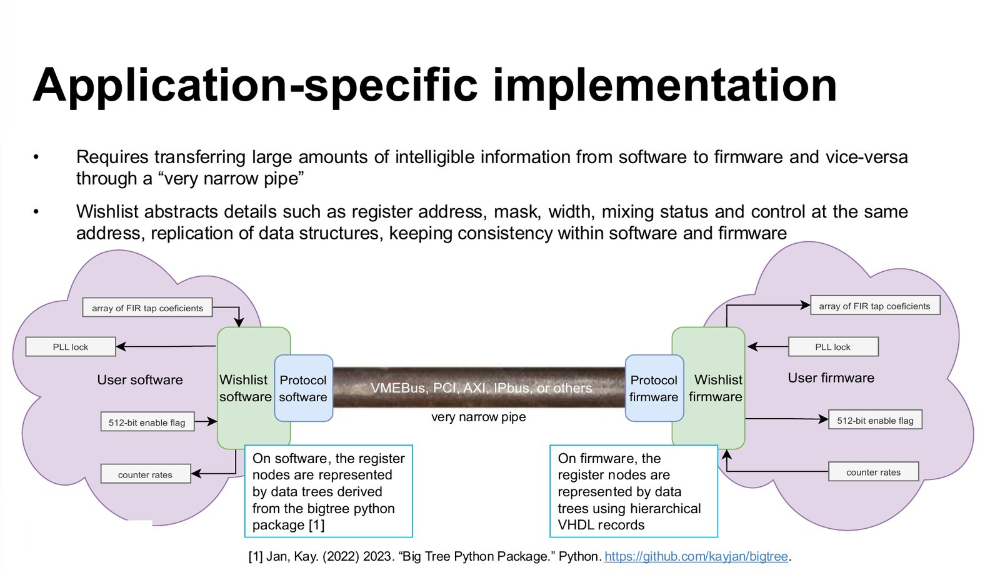
The generated code tests itself. Random values are written to every register, read back and compared, many times, in a different order each time, so that two registers sharing an address would be caught. These tests run in simulation as part of continuous integration.
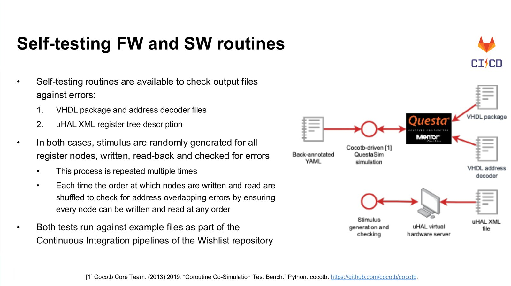
On the bench
In the lab at BNL, three GCM boards demonstrated the whole chain: one generated 8b10b data at 11.2 Gb/s as a stand-in for a subsystem, one aggregated and multiplexed it, and one received the multiplexed output over 25 Gb/s links using Core1990, a protocol based on Interlaken and checked it. Links from an Intel Agilex evaluation kit used by the calorimeter group ran overnight with no errors, a bit error rate below 6.7 × 10−16, and attenuation tests showed errors only after about 6 dB of extra optical loss.
The new transceivers needed work of their own. The ADC-based transceivers of the Versal devices adapt their equalisation automatically, and the adaptation does not behave well with the periodic patterns of 8b10b test data. Together with colleagues at AMD and AVNET we found a scheme that scrambles the data before 8b10b encoding, and we wrote our own word alignment and 8b10b encoding and decoding, because these transceivers do not support 8b10b out of the box.
What I would take to the next project
The interposer limit is the lesson that generalises. In a multi-die FPGA the number of wires between dies is a resource like logic or memory, and a full-mesh design can run out of it long before it runs out of anything else. Time-division multiplexing, a technique usually applied between boards, works just as well inside one chip to trade wires for clock cycles. The other lesson is the one from the working principles: tests that stay in the production firmware, and a register map that is generated rather than written, keep paying back long after they are built.